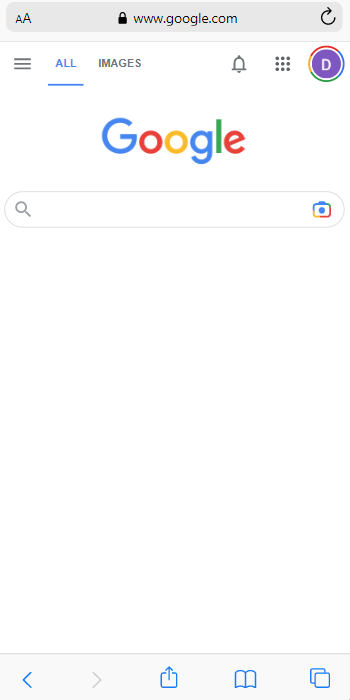
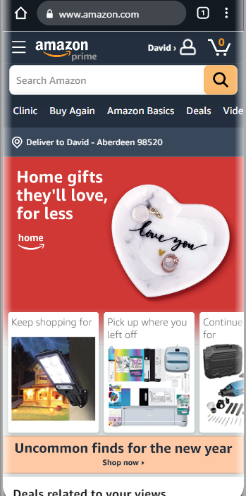

Design Principles
David Redick
Clean Design
GoogleGoogle.com 
Google has the cleanest design. It is simple, direct and to the point. There is n question of where you are and what you need to do"
Hick's Law
Hub SpotHubSpot.com
Hick's law is a psychological principle which states that the more options are available to a person, the longer it will take for him or her to make a decision about which option is best. in short, it is the K.I.S.S. Method of web design (Keep it simple stupid)
Repetition
AmazonAmazon.com 
Repetition: Put simply, graphical repetition means the reusing of the same or similar elements throughout your design. Doing so brings a clear sense of unity, consistency, and cohesiveness to your website or printed brochure. Amazon uses this to make to experience the same weither you are on the site or using the app... the experience is the same.